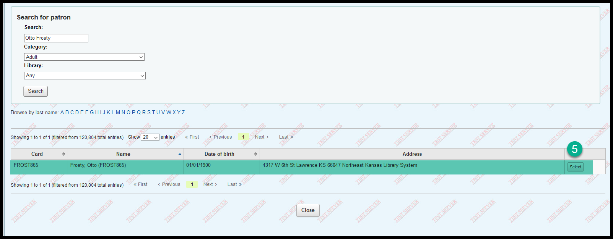

Add multiple guarantors to a patron¶
To add multiple guarantors to an account:¶
Search for an existing child patron that already has a guarantor
Click on “Edit”
In the guarantors section, click on “Search to add”
Search for the name of the patron in the search box
(note that the patron category must be chosen and that “Adult” is the default)
(this is a work-around to a bug that allows children to be the guarantors for other children - it is even possible because of this bug for a patron to be their own guarantor)
When you find the patron you wish to be the guarantor, click on “Select”

You will now see two guarantors for this Patron
Click on “Save”
On the patron’s “Details” tab, you will now see two multipleguarantors
All fees for this patron will count towards the $10.00 fee limit for all guarantors for this patron
If you select “Yes” for “Show checkouts to guarantors” all guarantors for this patron will see this patron’s current check-outs in the OPAC
If you select “Yes” for “Show fines to guarantors” all guarantors for this patron will see this patron’s current fines in the OPAC
Bugs and problms:¶
The “Add child” button has been renamed “Add guarantee” and is currently broken. If you go to an adult’s account and click on “Add guarantee,” the adult will not be added as the guarantor for the child you’re creating. You still must search for the guarantor. We expect this bug to be fixed soon.
As noted above, due to a bug, you must select a patron category when searching for a guarantor and the default search will be for “Adult” patrons. If the patron you’re searching for is not in the “Adult” category, you must select the category the patron you’re searching for is a part of. We expect this bug to be fixed soon.
You can no longer add a non-cardholder as a guarantor. This is also something we expect to resolve soon.
The ability to add multiple guarantors to a patron account involved major changes to the database. Because of this, all of the reports regarding guarantors will be broken after the upgrade and will need to be rewritten.